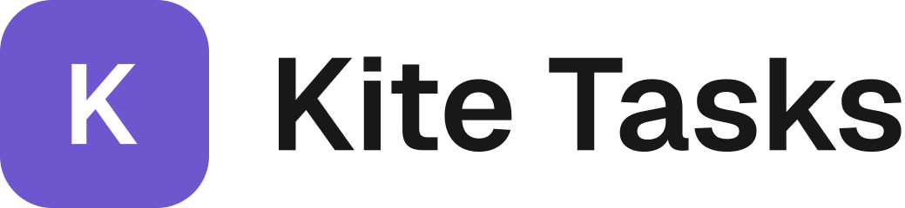
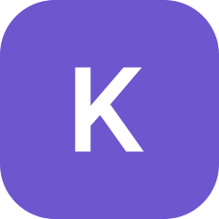
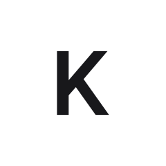
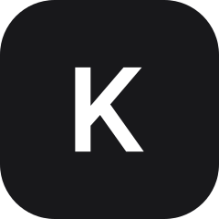
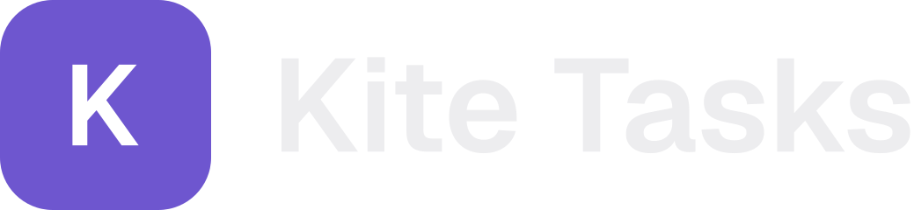

Kite Tasks is a task manager for teams of 5 to 30: spaces, projects and tasks in List, Board and Calendar views, with daily standups, reports and customer feedback. The interface is bilingual, Mongolian first and English second. The brand is quiet and precise: zinc greys carry the layout and one violet accent marks what matters.




The symbol is a violet (#6E56CF) square with 25% rounded corners and a white Geist SemiBold “K”.
The wordmark is the tile plus “Kite Tasks” in Geist SemiBold, gap one third of the tile.
Keep clear space of half a tile around the logo. Minimum tile size 16 px.
No gradients, glows, outlines, rotation or recolouring other than the mono versions.
Weights 400, 500, 600 only. Headings 600 with −0.01em tracking from 20 px. Mongolian Cyrillic and Latin share the same family.
Radii: 6 chips · 8 buttons and inputs · 10 cards · 12 panels · 14 modals. Spacing on a 4/8 px grid, 1 px borders, soft shadows.